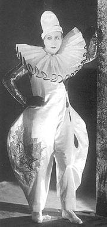

Saturday, January the 12th, 2013
back to: title, date or indexes
The diary of Gösta Ekman Senior, on this day in 1938:

Woke up and snorted cocaine. Plunged my fabulous head, with its boyish good looks, into a pail of ice cold water, then snorted some more cocaine. Sat for a while pondering whether to spend the day as a farmer's son, an eighteenth century aristocrat, an octogenarian lunatic, or a clown, in all of which roles I am of course equally convincing. Busy schedule of acting, directing, rehearsing, filming, recording, and administration, all fuelled by more and more cocaine. Felt a bit queasy and conked out.